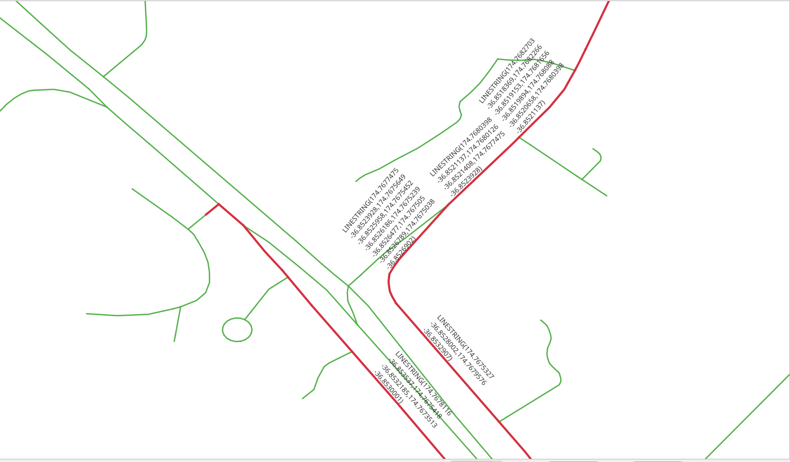
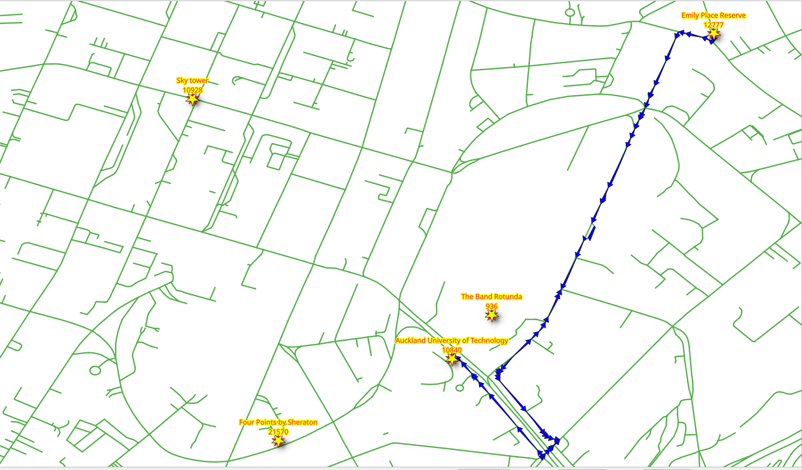
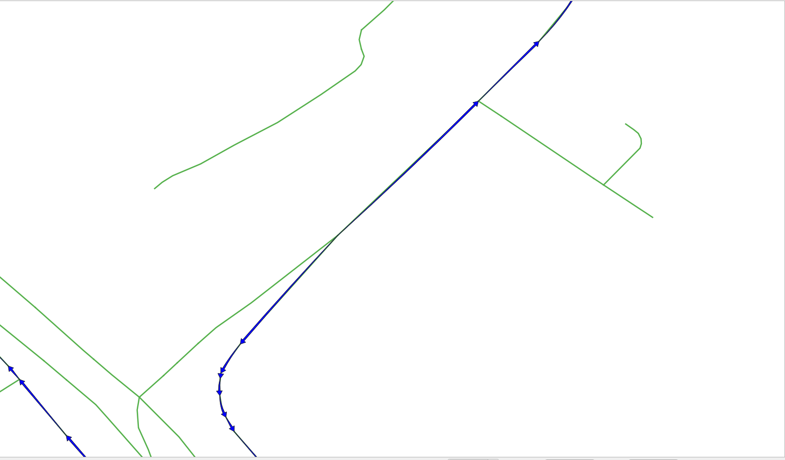

5. SQL function¶

pgRouting functions provide low level interface.
When developing for a higher level application, the requirements need to be represented in the SQL queries. As these SQL queries get more complex, it is desirable to store them in postgreSQL stored procedures or functions. Stored procedures or functions are an effective way to wrap application logic, in this case, related to routing logic and requirements.
5.1. The function requirements¶
The function will wrap pgr_dijkstra.
The function needs to work on any of the networks designed:
vehicle_nettaxi_net
The function needs to return the following routing information:
seq- A unique identifier of the rowsid- The segment’s identifiername- The segment’s namelength- The segment’s lengthseconds- Number of seconds to traverse the segmentazimuth- The azimuth of the segmentroute_geom- The routing geometryroute_readable- The geometry in human readable form.
Design of the function
The function to be created wrk_dijkstra with the following input parameters and
output columns:
Input parameters
Parameter |
Type |
Description |
|---|---|---|
|
REGCLASS |
The table/view that is going to be used for processing |
|
BIGINT |
The identifier of the departure location. |
|
BIGINT |
The identifier of the destination location. |
output columns
Name |
Type |
Description |
|---|---|---|
|
INTEGER |
A unique number for each result row. |
|
BIGINT |
The edge identifier. |
|
TEXT |
The name of the segment. |
|
FLOAT |
The number of seconds it takes to traverse the segment. |
|
FLOAT |
The length in meters of the segment. |
|
FLOAT |
The azimuth of the segment. |
|
TEXT |
The geometry in human readable form. |
|
geometry |
The geometry of the segment in the correct direction. |
5.2. Additional information handling¶
When the application needs additional information, like the name of the street,
JOIN the results with other tables.
5.2.1. Exercise 1: Get additional information¶
Problem
From Emily Place Reserve to Auckland University of Technology
Get the following information:
seqidnamesecondslength
Solution
The function returns the columns asked. (line 4)
Rename
pgr_dijkstraresults to application requirements names. (line 12).LEFT JOINthe results withvehicle_netto get the additional information. (line 17)LEFTto include the row withid = -1because it does not exist onvehicle_net
Test from |ch7_id_1| to |ch7_id_2| on
vehicle_net. (Last line)
1-- DROP FUNCTION wrk_dijkstra(regclass, bigint, bigint);
2
3CREATE OR REPLACE FUNCTION wrk_dijkstra(
4 IN edges_subset REGCLASS, IN source BIGINT, IN target BIGINT,
5 OUT seq INTEGER, OUT id BIGINT, OUT seconds FLOAT, OUT name TEXT, OUT length FLOAT
6)
7RETURNS SETOF record AS
8$BODY$
9SELECT
10seq, id, seconds, name, length
11FROM (
12 SELECT seq, edge AS id, node, cost AS seconds
13 FROM pgr_dijkstra(
14 'SELECT * FROM ' || $1,
15 source, target)
16) AS results
17LEFT JOIN vehicle_net USING (id)
18ORDER BY seq;
19$BODY$
20LANGUAGE SQL;
21
22SELECT * FROM wrk_dijkstra('vehicle_net', , );
CREATE FUNCTION
5.3. Geometry handling¶
From pgRouting point of view, the geometry is part of the additional
information, needed on the results for an application. Therefore JOIN the
results with other tables that contain the geometry and for further processing
with PostGIS functions.
5.3.1. Exercise 2: Route geometry (human readable)¶
{kind=link}
Problem
Route from the Emily Place Reserve to Auckland University of Technology
Additionally to the previous exercise, get the
geometry
geomin human readable form named asroute_readable
Solution
The function returns
route_readable. (line 6)The routing query named
resultsin a WITH clause. (line 11)The
geomprocessed withST_AsTextto get the human readable form. (line 19).Test from |ch7_id_1| to |ch7_id_2| on
vehicle_net. (Last line)
1DROP FUNCTION wrk_dijkstra(regclass, bigint, bigint);
2
3CREATE OR REPLACE FUNCTION wrk_dijkstra(
4 IN edges_subset REGCLASS, IN source BIGINT, IN target BIGINT,
5 OUT seq INTEGER, OUT id BIGINT, OUT seconds FLOAT, OUT name TEXT, OUT length FLOAT,
6 OUT route_readable TEXT
7)
8RETURNS SETOF record AS
9$BODY$
10WITH
11results AS (
12 SELECT seq, edge AS id, node, cost AS seconds
13 FROM pgr_dijkstra(
14 'SELECT * FROM ' || $1,
15 source, target)
16)
17SELECT
18 seq, id, seconds, name, length,
19 ST_AsText(geom)
20FROM results
21LEFT JOIN vehicle_net USING (id)
22ORDER BY seq;
23$BODY$
24LANGUAGE SQL;
25
26SELECT seq, route_readable FROM wrk_dijkstra('vehicle_net', , );
DROP FUNCTION
CREATE FUNCTION
5.3.2. Exercise 3: Route geometry (binary format)¶
{kind=link}
Problem
Route from the Emily Place Reserve to Auckland University of Technology
Additionally to the previous exercise, get the
geomin binary format with the nameroute_geom
Solution
The function returns
route_geom. (line 7)The geometry
geomof the segments (line 21)Test from |ch7_id_1| to |ch7_id_2| on
vehicle_net. (Last line)
1DROP FUNCTION wrk_dijkstra(regclass, bigint, bigint);
2
3CREATE OR REPLACE FUNCTION wrk_dijkstra(
4 IN edges_subset REGCLASS, IN source BIGINT, IN target BIGINT,
5 OUT seq INTEGER, OUT id BIGINT, OUT seconds FLOAT, OUT name TEXT, OUT length FLOAT,
6 OUT route_readable TEXT,
7 OUT route_geom geometry
8)
9RETURNS SETOF record AS
10$BODY$
11WITH
12results AS (
13 SELECT seq, edge AS id, node, cost AS seconds
14 FROM pgr_dijkstra(
15 'SELECT * FROM ' || $1,
16 source, target)
17)
18SELECT
19 seq, id, seconds, name, length,
20 ST_AsText(geom),
21 geom
22FROM results
23LEFT JOIN vehicle_net USING (id)
24ORDER BY seq;
25$BODY$
26LANGUAGE SQL;
27
28SELECT seq, route_geom FROM wrk_dijkstra('vehicle_net', , );
DROP FUNCTION
CREATE FUNCTION
5.3.3. Exercise 4: Route geometry directionality¶
{kind=link}
Visually, with the route displayed with arrows, it can be found that there are arrows that do not match the directionality of the route.
To have correct directionality, the ending point of a geometry must match the starting point of the next geometry
Inspecting the detail of the results of Exercise 2: Route geometry (human readable)
WITH
results AS (
SELECT seq, id, route_geom
FROM wrk_dijkstra('vehicle_net', , )
),
compare AS (
SELECT seq, id, lead(seq) over(ORDER BY seq) AS next_seq,
ST_AsText(ST_endPoint(route_geom)) AS id_end,
ST_AsText(ST_startPoint(lead(route_geom) over(ORDER BY seq))) AS next_id_start
FROM results
ORDER BY seq)
SELECT * FROM compare WHERE id_end != next_id_start;
Problem
Route from the Emily Place Reserve to Auckland University of Technology
Fix the directionality of the geometries of the previous exercise
geomin human readable form named asroute_readablegeomin binary format with the nameroute_geomBoth columns must have the geometry fixed for directionality.
Solution
To get the correct direction some geometries need to be reversed:
Reversing a geometry will depend on the
nodecolumn of the query to Dijkstra.A conditional
CASEstatement that returns the geometry in human readable form:Of the geometry when
nodeis thesourcecolumn.Of the reversed geometry when
nodeis not thesourcecolumn.
A conditional
CASEstatement that returns:The geometry when
nodeis thesourcecolumn.The reversed geometry when
nodeis not thesourcecolumn.
1DROP FUNCTION wrk_dijkstra(regclass, bigint, bigint);
2
3CREATE OR REPLACE FUNCTION wrk_dijkstra(
4 IN edges_subset REGCLASS, IN source BIGINT, IN target BIGINT,
5 OUT seq INTEGER, OUT id BIGINT, OUT seconds FLOAT, OUT name TEXT, OUT length FLOAT,
6 OUT route_readable TEXT,
7 OUT route_geom geometry
8)
9RETURNS SETOF record AS
10$BODY$
11WITH
12results AS (
13 SELECT seq, edge AS id, node, cost AS seconds
14 FROM pgr_dijkstra(
15 'SELECT * FROM ' || $1,
16 source, target)
17)
18SELECT
19 seq, id, seconds, name, length,
20 CASE
21 WHEN node = source THEN ST_AsText(geom)
22 ELSE ST_AsText(ST_Reverse(geom))
23 END,
24
25 CASE
26 WHEN node = source THEN geom
27 ELSE ST_Reverse(geom)
28 END
29FROM results
30LEFT JOIN vehicle_net USING (id)
31ORDER BY seq;
32$BODY$
33LANGUAGE SQL;
34
35SELECT seq, route_readable FROM wrk_dijkstra('vehicle_net', , );
DROP FUNCTION
CREATE FUNCTION
Inspecting the problematic rows, the directionality has been fixed.
WITH
results AS (
SELECT seq, id, seconds, route_geom
FROM wrk_dijkstra('vehicle_net', , )
),
compare AS (
SELECT seq, id, lead(route_geom) over(ORDER BY seq) AS next_id,
ST_AsText(ST_endPoint(route_geom)) AS id_end,
ST_AsText(ST_startPoint(lead(route_geom) over(ORDER BY seq))) AS next_id_start
FROM results
ORDER BY seq)
SELECT * FROM compare WHERE id_end != next_id_start;
5.3.4. Exercise 5: Using the geometry¶

There are many geometry functions in PostGIS, the workshop already covered some of them like
ST_AsText, ST_Reverse, ST_EndPoint, etc.
This exercise will make use an additional function ST_Azimuth.
Problem
Modify the query from the previous exercise
Additionally obtain the azimuth in degrees of the corrected geometry.
Solution
The function returns
aximuth. (line 8)The query from previous exercise is wrapped under additional subquery. (line 18)
The
azimuthis processed in degrees. (line 35).Test from |ch7_id_1| to |ch7_id_2| on
vehicle_net. (Last line)
1DROP FUNCTION wrk_dijkstra(regclass, bigint, bigint);
2
3CREATE OR REPLACE FUNCTION wrk_dijkstra(
4 IN edges_subset REGCLASS, IN source BIGINT, IN target BIGINT,
5 OUT seq INTEGER, OUT id BIGINT, OUT seconds FLOAT, OUT name TEXT, OUT length FLOAT,
6 OUT route_readable TEXT,
7 OUT route_geom geometry,
8 OUT azimuth FLOAT
9)
10RETURNS SETOF record AS
11$BODY$
12WITH
13results AS (
14 SELECT seq, edge AS id, node, cost AS seconds
15 FROM pgr_dijkstra(
16 'SELECT * FROM ' || $1,
17 source, target)),
18additional AS (
19 SELECT
20 seq, id, seconds, name, length,
21 CASE
22 WHEN node = source THEN ST_AsText(geom)
23 ELSE ST_AsText(ST_Reverse(geom))
24 END AS readable,
25
26 CASE
27 WHEN node = source THEN geom
28 ELSE ST_Reverse(geom)
29 END AS geom
30 FROM results
31 LEFT JOIN vehicle_net USING (id)
32 ORDER BY seq)
33
34SELECT *,
35 degrees(ST_azimuth(ST_StartPoint(geom), ST_EndPoint(geom))) AS azimuth
36FROM additional ORDER BY seq;
37$BODY$
38LANGUAGE SQL;
39
40SELECT seq, azimuth FROM wrk_dijkstra('vehicle_net', , );
DROP FUNCTION
CREATE FUNCTION
5.3.5. Exercise 6: Using the function¶
Try the function with a combination of the interesting places:
10840Auckland University of Technology936The Band Rotunda21570Four Points by Sheraton10928Sky tower12777Emily Place Reserve
Using different networks:
vehicle_nettaxi_netwalk_net
Names of the streets in the route
SELECT DISTINCT name
FROM wrk_dijkstra('vehicle_net', , );
Total seconds spent in each street
SELECT name, sum(seconds)
FROM wrk_dijkstra('taxi_net', , )
GROUP BY name;
Why it does not fully work with walk_net?
SELECT *
FROM wrk_dijkstra('walk_net', , );